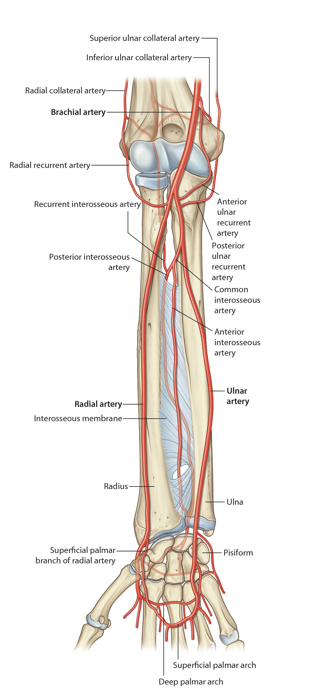

Lab3 - Module 2 - Anatomy of the Arm and Forearm: Page 10 of 11
Arteries of the Anterior Forearm
|  |
| Tap on image to enlarge |
| The brachial artery ends opposite the neck of the radius in the inferior part of the cubital fossa by dividing into its terminal branches, the radial and ulnar arteries, which are the two main arteries of the forearm. |
|
The Radial recurrent artery arises from the lateral side of the radial artery and ascends between the brachioradialis and brachialis muscles, supplies these muscles and anastomoses with the radial collateral artery to participate in the anastomosis around the elbow. The Muscular branches that supply muscles on the lateral side of the forearm. (Not identified in ths 3D Cadaver) The Superficial Palmar Arch that anastomoses with the terminal part of the ulnar artery. The superficial palmar branch supplies the thenar muscles The Deep Palmar Arch that runs across the wrist deep to the flexor tendons to anastomoses with the deep branch of the ulnar artery. |
|
The Anterior ulnar recurrent artery that arises just inferior to the elbow and runs between the brachialis and pronator teres supplying these muscles, anastomoses with the inferior ulnar collateral artery, participating in the anastomoses of the elbow. (Not identified in ths 3D Cadaver) The Posterior ulnar recurrent artery that arises distal to the anterior ulnar recurrent, passes posterior to the medial epicondyle to anatomoses with the superior ulnar collateral artery and participate in the elbow anastomoses. (Not identified in ths 3D Cadaver) The Common interosseous artery that arises in the cubital fossa and divides into the anterior and posterior interosseous arteries. (Not identified in ths 3D Cadaver) The Muscular branches that supply muscles on the medial side of the forearm. (Not identified in ths 3D Cadaver) Participates in both the superficial and deep palmar arches. |